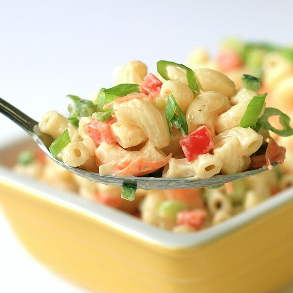

Macaroni Salad

Description
A delicious macaroni salad will be the perfect item to pair with any
meal. Having a good macaroni salad in your pocket will make you the
talk of every neighborhood party. Look no further than this recipe
to find the best deli-style macaroni salad crowd favorite.
Ingredients
- 1 cup mayonnaise (optional)
- 1/4 cup white vinegar
- 2 tablespoons Dijon mustard
- 2 teaspoons kosher salt, or more to taste
- 1/2 teaspoon ground black pepper
- 1/8 teaspoon cayenne pepper
- 1 tablespoon white sugar, or more to taste
- 1 cup finely diced celery
- 3/4 cup diced red bell pepper
- 1/2 cup grated carrot
- 1/2 cup chopped green onions, white and light parts
- 1/4 cup diced jalapeno pepper
- 1/4 cup diced poblano pepper
- 1 (16 ounce) package uncooked elbow macaroni
- 1 tablespoon mayonnaise (optional)
- 1 tablespoon water (optional)
Steps
- Whisk 1 cup mayonnaise, vinegar, Dijon mustard, salt, black
pepper, and cayenne pepper together in a bowl until well
blended. Whisk in sugar. Stir in celery, red bell pepper,
carrot, onions, and jalapeno and poblano peppers. Regrigerate
until macaroni is ready to dress.
- Bring a large pot of well salted water to a boil. Cook elbow
macaroni in the boiling water, stirring occasionally until
cooked through, 8 to 10 minutes. Drain but do not
rinse. Allow macaronie to drain in colandar about 5 minutes,
shaking out moisture from time to time. Pour macaroni into
large bowl, toss to separate and cool to room temperature.
Macaroni should be sticky.
- Pour dressing over macaroni and stir until dressing is
evenly distrbuted. Cover with plastic wrap. Refrigerate at
least 4 hours or, ideally, overnight to allow dressing to
absorb into the macaroni.
- Stir salad before serving. Mix 1 tablespoon mayonnaise and
1 tablespoon water into salad for fresher look.